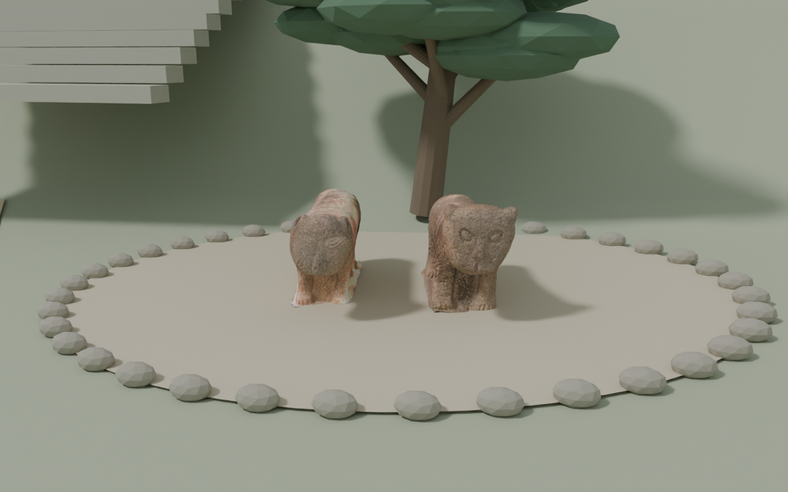
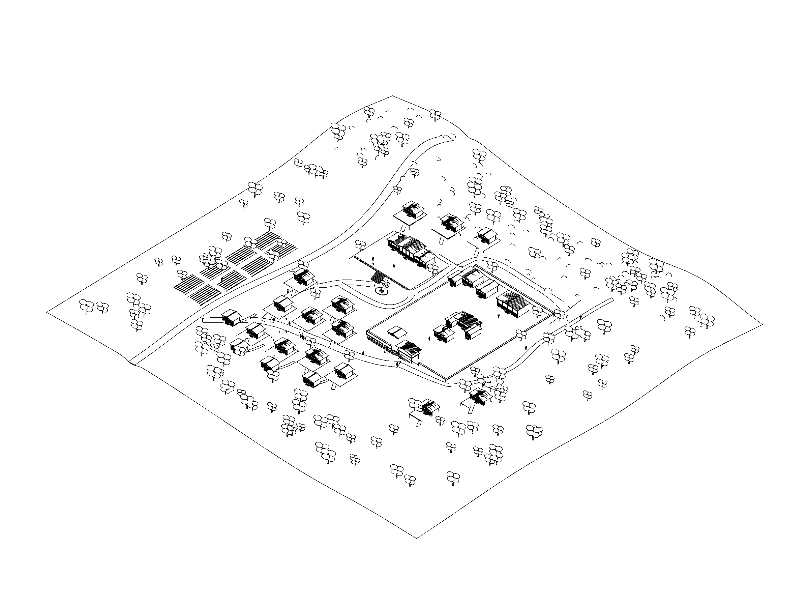
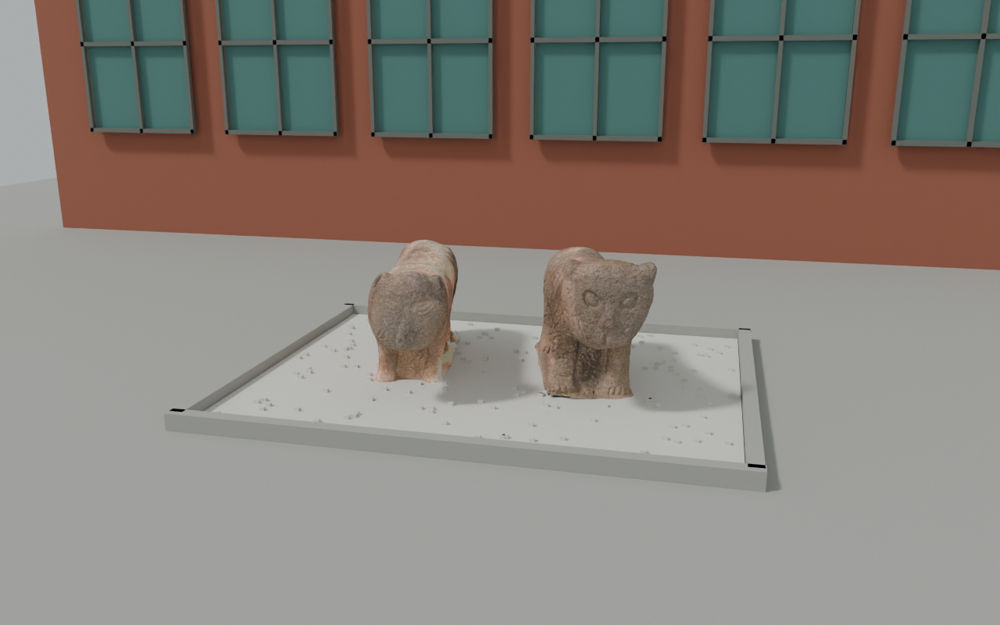

인물의 가까운 구도와 복식, 장소별 카메라 동선, 객사 계단 아래 석사자 두 상의 배치, 계절을 거쳐 현재로 이어지는 엔딩을 연결한 버전입니다.
v046: 주인공은 고정하고 배경 주민의 작은 움직임, 아이 2명·고양이 2마리·나비 3마리, 민가 4채와 샛길을 보탰습니다. 기존 주동선과 관아·객사 배치는 유지했습니다. 전환에만 옅은 안개가 나타나며 인물 관찰 중에는 걷힙니다.

다섯 인물 동선과 엔딩을 순서대로 담은 12배속 공간 검토 영상입니다. 최종 질감의 영상이 아닌 Blender 동선 프리뷰입니다. 웹에서는 스크롤로 진행합니다.
도면과 영상은 v046 마을 모델에서 다시 출력했습니다. 개별 카메라 파일은 동선을 보존한 v045 원본이며, 새 지형은 v046 마을 파일을 기준으로 합니다. 역사 공간과 현재 배경은 자료를 참고한 연출용 근사 모델이며 실측 복원도는 아닙니다.

